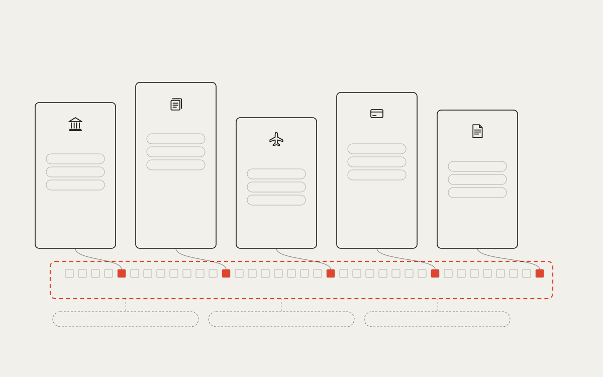

BASE LAYER · ORDER · AVAILABILITY · RETRIEVAL · CONTENT-BLIND Bank ledger state validation meaning Securities registry state validation meaning Airline loyalty state validation meaning Payment network state validation meaning Public records state validation meaning Base layer and semantic layers Each system keeps its meaning above. The base layer only orders what they anchor. SEMANTIC LAYERS · EXIST TODAY Q2 · global, local or anchored order? Q5 · can ordering be fair? Q8 · who is liable? V10 · BASE vs SEMANTIC · engineering-print (V01 language) · explainer before the research questions